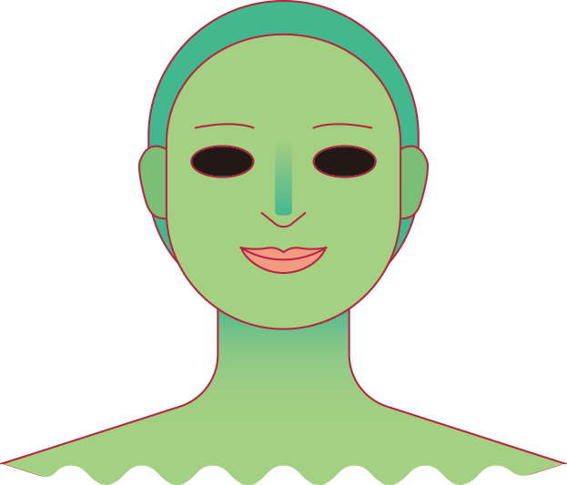
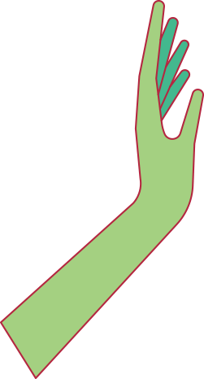
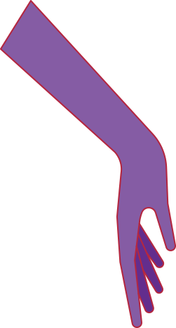
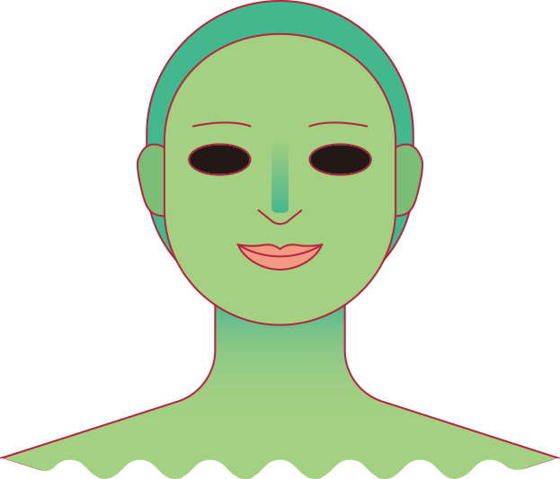
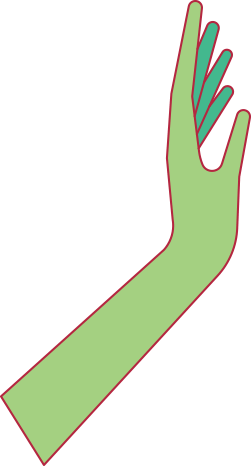
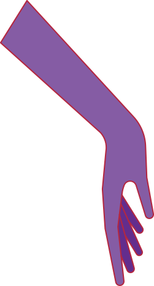

흉둥이는 사람한테 붙기 전까지는 아주 작은 형태지만,
한 번 사람에게 붙게 되면 몸집이 불어나면서
사람을 집어먹을 만큼 커다래진대.
신기하게도 흉둥이의 가죽은 투명해서
집어삼킨 사람의 형태가
다른 사람에게도 그대로 보인대.
근데 어찌나 착 달라붙어 있는지,
겉으로 봤을 때는 일반 사람하고 똑같아서
흉둥이인지 아닌지 구분하기가 쉽지 않대.
가죽도 아주 질겨서 혼자서는 쉬이 빠져나오지
못한다 하더라고. 게다가 삼켜진 사람은
흉둥이에게 생각과 행동이 통제되어서
다른 사람에게 도움을 요청하기도 쉽지 않대.
흉둥이는 삼킨 사람의 입으로 또 다른 사람에게
새끼를 까며 기생한다는데, 그래서 그런지
사람들에게 쉴 새 없이 말을 한다 하더라고.
주로 자기가 세상에서 제일 불행하고
힘든 사람인 듯이 신세 한탄을 많이 한대.